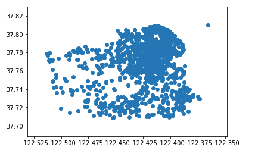

Prediction of San Francisco Crime Rate
The project is the prediction of SF Crime Rate, an unsupervised problem relating to the machine learning. Machine learning is the scientific study of algorithms and statistical models that computer systems use in order to perform a specific task effectively without explicit instructions, relying on patterns and inference instead. The tasks it solved could be divided into two parts: supervised problems and the unsupervised problems. This task is the latter that the original data (test data) has not been labeled.
Research Target
The research target is to show a good prediction about the possibility of criminal issue based on the geographical and time-based data of SF with great reliability and specificity. Afterwards, the police could effectively strengthen their force in the place which shows the strong possibility of crime to improve the public security.
Data Overview
The train data contains nine different aspects to describe the crime in SF, containing dates, categories, description, day of week, pd district, resolution, longitude, latitude, and address. Within the characteristics, categories and resolution would not be shown in the test data, therefore can’t be used as the train feature but as label. After the intuition screening, I learnt to choose the better features through data exploration and visualization.
Data Exploration and Visualization
Data exploration is a method, letting the decision maker understand the features and the datas through visual exploration like charts and graphs. One of the most effective way of data exploration is data visualization.
Data Visualization presents the data in a pictorial or graphical format, enabling decision makers to view analytics presented visually, in order to simplify difficult concepts and identify new patterns. With data visualization, people can take the principles or concepts to further steps through drilling down data into charts and graphs more detail by using technologies.
In the case of prediction of San Francisco Crimes, with visualizing the data in different features, the decision maker would be easier to analyze the affecting factors, more efficiently calculate the correlation, and better in prediction.

From the plot we can see how the attribution of Stolen Property in San Fransisco by visualizing the data into the graph. With the needs of predicting the categories of crime, the graph effectively shows the location between different range of longitude and latitude. Therefore the longitude and latitude can be considered as an affecting features and useful predictor.
Feature Selection: Information Gain
Information gain is the change in information entropy H from a proper state to a state that takes some information as given: where is the conditional entropy of given the value of attribute. In the case of SF crime rates, we could use information gain to analyze the usefulness of a feature. For instance, when we choose day of week to predict the category, we could calculate the pre-entropy of it; afterwards, add pd district as another feature to calculate the post-entropy; the difference between pre-entropy and the post-entropy would be the information gain. The larger the information gain is, the more effective the feature is.
Research Method
Base on the target, I chose multi-case classification of supervised machine learning as my model to predict the criminal categories.
Knowledge Acquired
Model selection
In order to select the best model, I need to eliminate the bad-fitting-model situation like over-fitting. Over-fitting is the situation that the model is best fit for the train data, considering the common errors, but bad for the test data. Over-fitting model leads a bad prediction and should be eliminated from the model choosing. Generalization is another example of a bad model that can’t make precise prediction , happening when the concepts learned by a machine learning model apply to specific examples not seen by the model when it was learning.
Measurement
Measurement is the indicator to show the how well the model predict the test data. The possible result of the measurement has four types: true positive prediction, false negative prediction, false positive prediction, true negative prediction. The precision is the ratio of correctly predicted positive observations to the total predicted positive observations. The recall or sensitivity is the ratio of correctly predicted positive observations to the all observation in actual class (all correctly predicted data).
Models
Linear regression
Just as statistic, linear regression refers to a model that describes the changing rule between independent variable and the dependent variable through a linear relationship to predict the final result (dependent variable) through the causing variable.
Decision Tree
Decision tree is a model with a tree shape to make the prediction base on the information gain tool. It includes change event outcomes, resource costs, and utility, displaying an algorithm that contains conditional control statements only. Based on the information gain value, the higher-value feature would be appeared on the ‘main stem’ first, then the less-higher value ones, and so on to the end of the possibility. It is a valuable model to predict the test with less affective features.
Neural Networks
If the linear regression is the model describe the relationship in two dimension space, neural networks multiply it into multi-dimension world. Neural networks are a class of models within the general machine learning literature, a specific set of algorithms that have revolutionized machine learning. Through using the activation functions, the neural networks could express the complexity of different affective features and how they influences the prediction.
Decision Boundary
A decision boundary is the region of a problem race in which the output label of a classifier is ambiguous. Through visualization, the chart of decision boundaries and the different areas they refer to could provide a clear image about how the feature affect the result.